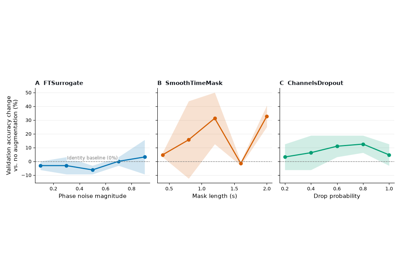
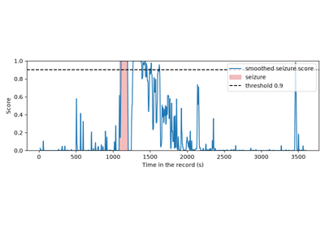

braindecode.models.ShallowFBCSPNet#
- class braindecode.models.ShallowFBCSPNet(n_chans=None, n_outputs=None, n_times=None, n_filters_time=40, filter_time_length=25, n_filters_spat=40, pool_time_length=75, pool_time_stride=15, final_conv_length='auto', conv_nonlin=<class 'braindecode.modules.activation.Square'>, pool_mode='mean', activation_pool_nonlin=<class 'braindecode.modules.activation.SafeLog'>, split_first_layer=True, batch_norm=True, batch_norm_alpha=0.1, drop_prob=0.5, chs_info=None, input_window_seconds=None, sfreq=None)[source]#
Shallow ConvNet model from Schirrmeister et al (2017) [Schirrmeister2017].
Convolution

Model described in [Schirrmeister2017].
- Parameters:
n_chans (int) – Number of EEG channels.
n_outputs (int) – Number of outputs of the model. This is the number of classes in the case of classification.
n_times (int) – Number of time samples of the input window.
n_filters_time (int) – Number of temporal filters.
filter_time_length (int) – Length of the temporal filter.
n_filters_spat (int) – Number of spatial filters.
pool_time_length (int) – Length of temporal pooling filter.
pool_time_stride (int) – Length of stride between temporal pooling filters.
final_conv_length (int | str) – Length of the final convolution layer. If set to “auto”, length of the input signal must be specified.
conv_nonlin (
type[Module] |Callable) – Non-linear module class to be used after convolution layers. For backward compatibility, callables are also accepted and wrapped withExpression.pool_mode (str) – Method to use on pooling layers. “max” or “mean”.
activation_pool_nonlin (
type[Module]) – Non-linear module class to be used after pooling layers.split_first_layer (bool) – Split first layer into temporal and spatial layers (True) or just use temporal (False). There would be no non-linearity between the split layers.
batch_norm (bool) – Whether to use batch normalisation.
batch_norm_alpha (float) – Momentum for BatchNorm2d.
drop_prob (float) – Dropout probability.
chs_info (list of dict) – Information about each individual EEG channel. This should be filled with
info["chs"]. Refer tomne.Infofor more details.input_window_seconds (float) – Length of the input window in seconds.
sfreq (float) – Sampling frequency of the EEG recordings.
- Raises:
ValueError – If some input signal-related parameters are not specified: and can not be inferred.
Notes
If some input signal-related parameters are not specified, there will be an attempt to infer them from the other parameters.
References
[Schirrmeister2017] (1,2)Schirrmeister, R. T., Springenberg, J. T., Fiederer, L. D. J., Glasstetter, M., Eggensperger, K., Tangermann, M., Hutter, F. & Ball, T. (2017). Deep learning with convolutional neural networks for EEG decoding and visualization. Human Brain Mapping , Aug. 2017. Online: http://dx.doi.org/10.1002/hbm.23730
Hugging Face Hub integration
When the optional
huggingface_hubpackage is installed, all models automatically gain the ability to be pushed to and loaded from the Hugging Face Hub. Install with:pip install braindecode[hub]
Pushing a model to the Hub:
from braindecode.models import ShallowFBCSPNet # Train your model model = ShallowFBCSPNet(n_chans=22, n_outputs=4, n_times=1000) # ... training code ... # Push to the Hub; ``datasets`` and ``base_model`` go to the card model.push_to_hub( repo_id="username/my-shallowfbcspnet-model", commit_message="Initial model upload", model_card_kwargs={"datasets": ["BNCI2014_001"]}, )
Loading a model from the Hub:
from braindecode.models import ShallowFBCSPNet # Load pretrained model model = ShallowFBCSPNet.from_pretrained("username/my-shallowfbcspnet-model") # Data the weights were trained on, from the Hub model card print(model.card_data.datasets if model.card_data else None) # Load with a different number of outputs (head is rebuilt automatically) model = ShallowFBCSPNet.from_pretrained("username/my-shallowfbcspnet-model", n_outputs=4)
Extracting features and replacing the head:
import torch x = torch.randn(1, model.n_chans, model.n_times) # Extract encoder features (consistent dict across all models) out = model(x, return_features=True) features = out["features"] # Replace the classification head model.reset_head(n_outputs=10)
Saving and restoring full configuration:
import json config = model.get_config() # all __init__ params with open("config.json", "w") as f: json.dump(config, f) model2 = ShallowFBCSPNet.from_config(config) # reconstruct (no weights)
All model parameters (both EEG-specific and model-specific such as dropout rates, activation functions, number of filters) are automatically saved to the Hub and restored when loading.
See Loading and Adapting Pretrained Foundation Models for a complete tutorial.
Examples using braindecode.models.ShallowFBCSPNet#


Convolutional neural network regression model on fake data.


Fingers flexion cropped decoding on BCIC IV 4 ECoG Dataset


Searching the best data augmentation on BCIC IV 2a Dataset


Sparse autoencoders on the activations of a motor-imagery decoder

Fingers flexion decoding on BCIC IV 4 ECoG Dataset

Seizure alarm on CHB-MIT, scored with SzCORE